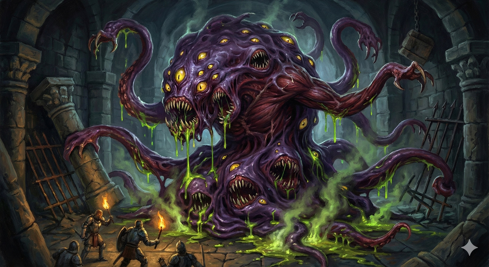

Your magic is not merely energy; it is a hungry, living thing. Your spells manifest as gnashing teeth, lashing tongues, and corrosive slime. You do not just cast magic—you feed it to your enemies.
1st-Level Feature
1st-Level Feature
Immediately after casting a leveled spell that deals damage, use a Bonus Action to make a melee spell attack. 1d8 + Cha Acid damage.
6th-Level Feature
Spend 1 SP to change spell damage to Acid. Add Cha mod to damage of Acid spells.
14th-Level Feature
Reaction when hit: Dissolve into goo. Take half damage and move 30ft without opportunity attacks.
18th-Level Feature
Action (5 SP): Transform into a Large predator for 1 minute. Immune to Acid. Creatures within 5ft take 2d8 Acid damage when they hit you. Your Ravenous Magic makes two attacks.